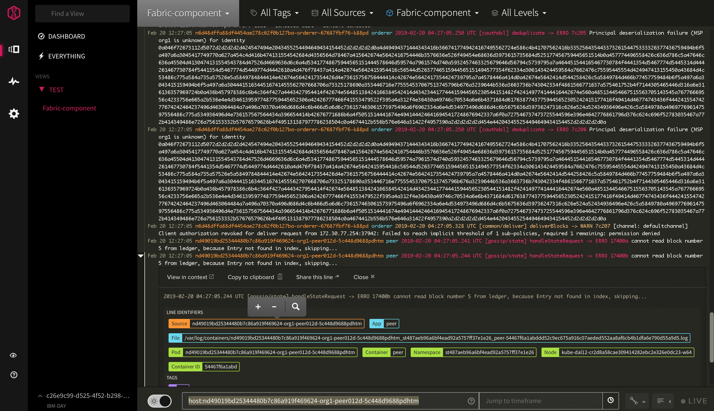
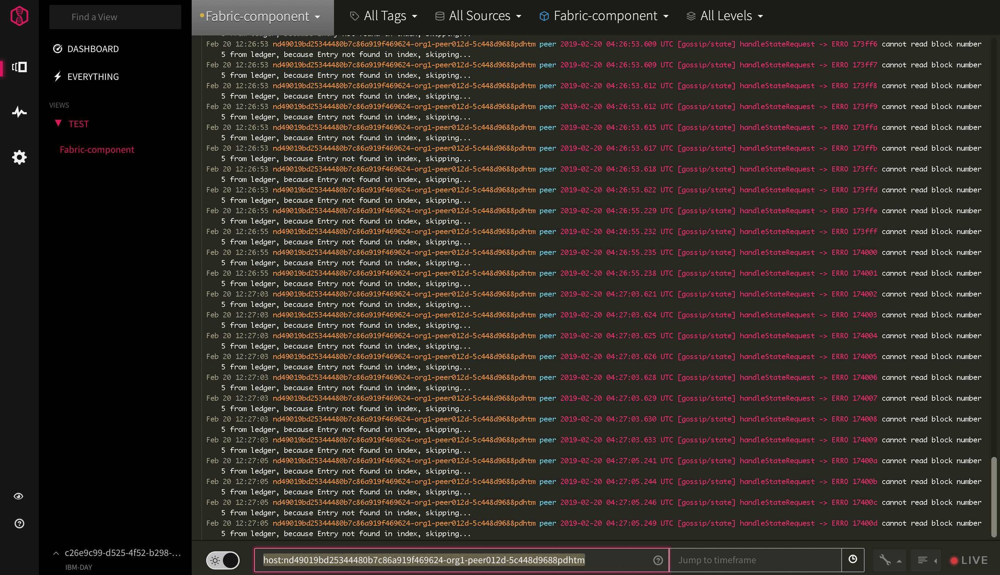

logDNA¶
This is a note for how to setup LogDNA for Kubernetes cluster. For more information, see How to Manage Kubernetes cluster logs with IBM Log Analysis with LogDNA in IBM Cloud docs(https://console.bluemix.net/docs/services/Log-Analysis-with-LogDNA/tutorials/kube.html#kube).
-
- Feature for a paid plan
- 4.1. Filter logs
- 4.2. Search logs
- 4.3. Create view and setup alert
- 4.4. Graph logs
- 4.5. Export log line
- 4.6. Archive log files to COS
- 4.7. Customize Log Parser
- 4.8. Search for one network
- 4.9. Enabld super-tenancy
1. Provision LogDNA service¶
Log in to the IBM Cloud account.
Catalog > Developer Tools category > IBM Log Analysis with LogDNA > Create instance
When the service is provisioned, you can navigation to Web UI.
Observability > Logging > View LogDNA
LogDNA ingestion key is available from the main panel for the LogDNA service instance.
2. Add LogDNA instance to Kubernetes cluster¶
ibmcloud login -a api.ng.bluemix.net -sso
ibmcloud ks clusters
ibmcloud ks cluster-config <cluster_name_or_ID>
export KUBECONFIG=/path/to/kubeconfig/file
kubectl create secret generic logdna-agent-key --from-literal=logdna-agent-key=<logDNA_ingestion_key>
kubectl create -f https://repo.logdna.com/ibm/prod/logdna-agent-ds-us-south.yaml
kubectl get pods --all-namespaces| grep logdna
3. Delete LogDNA instance¶
kubectl delete secret logdna-agent-key
kubectl delete daemonset logdna-agent
4. Feature for a paid plan¶
4.1. Filter logs¶
click the Views icon > select Everything or a view > select All Tags/Sources/Apps/Levels
4.2. Search logs¶
When you search log data, the search applies any log filters and time queries configured in that view.
You can do simple searches (single term string search), compound search (multiple search terms and operators), field searches if the log line can be parsed, and others.
When the log line can be parsed, choose a line identifier on an expanded line, and there will be a plus icon, a minus icon and a magnifying glass. The field is related with Customize Log Parser.
When click the plus/minus icon, the search box is the bar at the bottom left will show the field to be included/excluded. When click magnifying glass, the source option at the top will be changed which is no longer "All Sources", and the time window at the bottom right will be set to the timestamp of this particular log line.
For more information, see How to Search Logs in LogDNA docs(https://docs.logdna.com/docs/search).
4.3. Create view and setup alert¶
Alert can be set to email/Slack/Pagerduty/OpsGenie/Datadog/AppOptics/Librato/VictorOps.
You can configure an alert by using alert template/a view-specific alert.
alert template¶
click Setting > alerts > add a preset alert
Then you can attach the preset alert to a view to make it work.
view-specific alert¶
click Views > select Everything or a view > filter log data > click Save as new view / alert
4.4. Graph logs¶
create Dashboard > Graphs > Plot > breakdown
4.5. Export log line¶
perform search query > click view menu > select Export Lines > receive an email
4.6. Archive log files to COS¶
https://docs.logdna.com/docs/archiving
https://cloud.ibm.com/objectstorage/create https://www.youtube.com/watch?v=GtN5J05-c7Q (provision dem starts at 47:00)
https://sre-console.automation.cloud.ibm.com/sre-console/katamaris
create COS instance¶
Create COS service > Create a bucket > Create a service ID for COS
Add COS instance to LogDNA¶
Configuration > Archiving > IBM Cloud Object Storage > set the bucket/endpoint/API key/instance ID
After LogDNA archive logs to a customer COS bucket. It can be queried directly with tools like IBM Cloud SQL Query.
4.7. Customize Log Parser¶
Up to now, LogDNA matically parses the following log line types: https://docs.logdna.com/docs/ingestion#section-supported-types. LogDNA allows the customer to customize their own filds.
Configuration > Parsing
Choose Log Line¶
By either manually adding the logline or using a search query to have LogDNA bring suggestions from your ingested lines, a sample logline needs to be ready to pass to the next stage.
Parsing Template¶
The sample log line is used as a reference and you can build the parsing rules with the parsing operators. Valid parsing template is required to proceed the next stage.
Test & Verify¶
The parsing template is tested in this stage. Parsing rule is run through different sample lines and each result needs to be marked as Valid or Invalid by you.
For more information, see Custom Log Parser in LogDNA docs(https://docs.logdna.com/docs/custom-parsing).
4.8. Search for one network¶
Select Filter peer/orderer/ca in All Apps and put "host:networkid-
This is search view with Container selection as Fabric-component, which includes peer+orderer+ca, and one log item has been parsed.

Here's the log for peer org1-peer012d in network nd49019bd25344480b7c86a919f469624, with search box ashost:nd49019bd25344480b7c86a919f469624-org1-peer012d-5c448d9688pdhtm (you can put host:nd49019bd25344480b7c86a919f469624-org1-peer012d for the same result).

4.9. Enabld super-tenancy¶
Since IBM Cloud Log Analysis support muti-tenancy, LogDNA team is working on super-tenancy feature. It is not available yet.